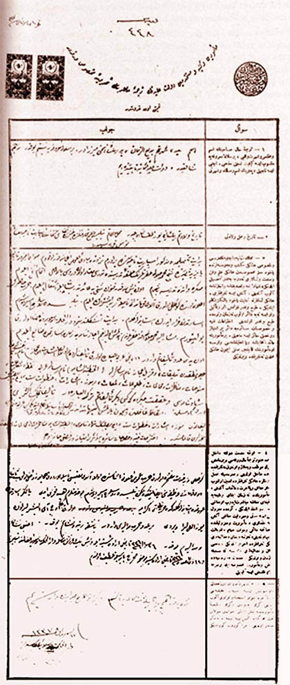

|
Darül Hikmetil Ýslamiyeye verdiði öz geçmiþ |
  
|
|
Darül Hikmetil Ýslamiyeye verdiði öz geçmiþ |
|
Bediüzzaman’ýn Darül Hikmetil Ýslamiyeye verdiði öz geçmiþ

ME'MURÝN VE KETEBE VE MÜSTEHDEMÝN-Ý DEVLET-Ý ALÝYYENÝN
TERCÜME-Ý HALLERÝNÝN TAHLÝLÝNE MAHSUS VARAKADIR
-KIYMETÝ ON KURUÞTUR-
Sual: 1) Tercüme-i hal sahibinin isim ve mahlasý ve þöhret ve lakabý, bir sülale-i ma'rufeye mensub ise keyfiyet-i nisbeti, mezhebi, ecnebi ise tabiiyyeti, pederinin isim ve meslek ve þöhreti?
Cevap: 1) Ýsmim Said, þöhretim Bediüzzaman, pederimin ismi Mirza'dýr. Bir sülale-i ma'rufeye nisbetim yoktur. Mezhebim Þafiidir. Devlet-i Aliyyeyi Osmaniye tabiiyyetindeyim.
Sual: 2) Tarih ve mahall-i veladeti?
Cevap: 2) Tarih i veladetim 1293'tür. Mahall-i veladetim. Bitlis vilayeti dahilinde Hizan kazasý mülhakatýndan. Ýsparit nahiyesinin Nurs Karyesidir.
Sual: 3) Memalik-i Osmaniyye ve ecnebiyyenin resmi ve hususi hangi mekteb ve medreselerinde, yahut muallim-i mahsustan hangi ilim ve fen ve san'at ve lisanlarý ne dereceye kadar tahsil eylediði, þehadetname ve tasdikname ve icazetname alýp almadýðý, almýþ ise tarihleri. Hangi lisanlarla kitabet yahut yalnýz tekellüm ettiði tab ve neþrolunmuþ eser ve telifi var ise neye dair olup ne zaman ve nerede tab ve neþrolduðu ihtiraati fenniyye ve hususat-ý saireye dair bir imtiyaz ve ruhsatý haiz ise mahiyeti bir memuriyete ait intihabname veya ehliyetnamesi varsa o me'muriyetin kaçýncý sýnýfý için hangi mabalden ne tarihte verildiði?
Cevap: 3) Bidayet-i tahsilimde mezkur Ýsparit nahiyesinde biraderim nezdinde mebadi-i ulumu iki sene kadar okudum. Sonra Erzurum'a tabi Bayezit kasabasýnda Þeyh Muhammed Celali hazretlerinin halka-i tedrisinde tederrüs-ü mutad olan dürusu bi'l-ikmal itmam-ý nüsah eyledim. Harb-ý hazýrýn ilaný üzere gönüllü olarak alay kumandaný namýyla harbe iþtirak eyledim. Bitlis'te Ruslara esir düþtüm. Esaretten firar ederek Ýstanbul'a geldim. Bidayete-i teþekkülünden beri Dar-ül Hikmet-il Ýslamiye'de aza olarak bulunuyorum. Müþarün ileyh Muhammed Celali Efendi hazretlerinden almýþ olduðum icazetnameyi zaman-ý esaretimde zayi eyledim. On yedi adet te'lifatým vardýr. Birinci Arabiyü'l-ibare olarak te'lif gerdem olan Ýþarat-ül Ý'caz nam tefsir-i þerif ve mantýkta Talikat ve Kýzýl Ý'caz nam risalelerle El Hutbet-üþ Þamiye nam risale-i Arabi... Nokta, Þuaat, Sünuhat, Münazarat, Muhakemat, Tuluat, Lemaat, Rumuz, Ýþaret, Hutuvat-ý Sitte, Ýki Musibetin Þehadetnamesi ve Hakikat Çekirdekleri gibi diðer te'lifatým Türkiyy'ül-ibaredir. Te'lifatýmýn ekserisi irþad-ý Müslimin ve ikaz-ý gafilin için yazýlmýþ münebbihattandýr. Türk ve Kürd lisanýyla tekellüm ettiðim gibi Arabi ve Farisi lisanlarýyla yazar ve okurum.
Te'lifatýmdan Rumuz, Ýþarat, Hutuvat-ý Sitte, Ýki Musibetin Þehadetnamesi, El Hutbet-üþ Þamiye, Münazarat, Muhakemat ve Talikat'ýn nüshalarý kalmamýþtýr. Ýhtiraat-ý fenniye ve hususat-ý saire dair bir imtiyaz ve ruhsatý haiz deðilim.
Sual: 4) Evvelce hizmet-i devlete dahil olup da henüz tercüme-i hal varakasý vermemiþ olanlarýn muvazzaf veya mülazim olarak ne tarihte ve nerede dahil olduðu ve sýrasýyla nasýl me'muriyetlere hangi tarihlerde tayin olunup ne miktar maaþ veya ücret ve aidat aldýðý, her me'muriyette ne zaman ifa-yý vazifeye ve istifa-yý maaþa mübaþeret edip o maaþýn ne vakte kadar ahzeylediði arada mazul kalmýþ ise müddeti ve mazuliyet maaþý almýþ ise miktarý me'muriyet ve mazuliyetinde muhassesatýnca daimi ve muvakkat zamaim ve tenzilat olup olmadýðý, ne rütbe ve niþan ve madalyalarý hangi tarihlerde ihraz eylediði ecnebi niþan ve madalyalarý varsa ne sebeble ve ne zaman verildiði hidemat-ý gayr-ý resmiyede bulunmuþ ve me'muriyet-i mahsusa ile bir tarafa i'zam kýlýnmýþ ise keyfiyeti?
Cevap 4) Gönüllü ve bir hizmet-i müftehire olarak harb-ý umumi ilaný esnasýnda evvela alay müftüsü namýyla ordu-yu humayuna dahil olup saniyen alay kumandaný vazifesini ifa etmekte iken Bitlis'te Ruslara esir düþtüm. Bu hizmetlerim hep fahri idi. Yalnýz esaretten avdetimde Ýstanbul'a geldiðimde Harbiye Nezareti ikramiye olarak bana üç ay elliþer liradan yüz elli lira verdi. Bir adet harb madalyasý vardýr. Baþka rütbe ve niþaným yoktur. Ecnebi niþan ve madalyam yoktur. 26/Þevval/1334 tarihli irade-i seniye ile ve beþ bin kuruþ maaþla Dar-ül Hikmet-il Ýslamiye azalýðýna tayin ve 18/Zilkade/1336 tarihli Ýrade-i Seniye mucibince (mahreç) payesiyle taltif olundum.
Sual: 5) Bulunduðu me'muriyetlerden infisalý vuku bulmuþ ise esbab-ý hakikiyesi ve bilahare cevaz-ý istihdam kararý alýp alamadýðý, gerek bunlardan ve gerek vazife-i me'muriyetine taalluk etmiyen ahvalden dolayý taht-ý muhakemeye alýnmýþ ise neticede ne hüküm sadýr olduðu ve ceza görüp görmediði?
Cevap: 5) Þimdiye kadar hiçbir veçhile taht-ý muhakemeye alýnmadým. Diðer suallere cevaptan veresteyim.
17/Teþrin-i evvel/1337
Dar-ül Hikmet-il Ýslamiye azasýndan
Bediüzzaman Said
Kaynak: RisaleiNurEnstitusu.org